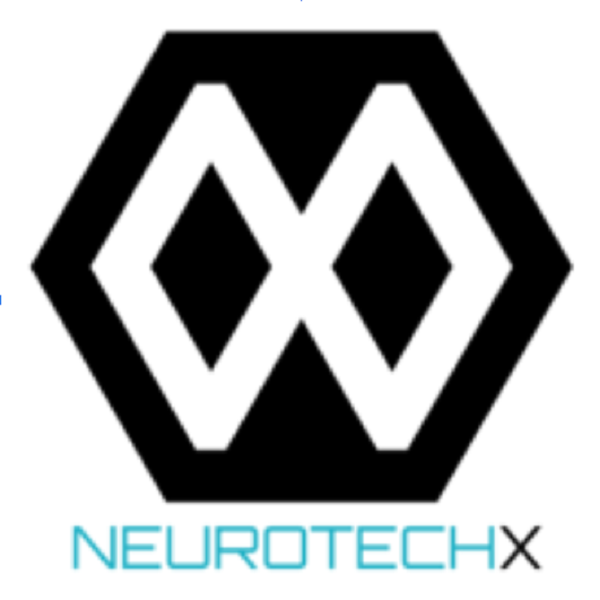

Neurotech UCB
Neurotech@UCB sirve como un punto de discusión sobre las nuevas
tecnologías utilizadas en el campo de la investigación en neurociencia.
Nuestra organización de estudiantes utiliza una mezcla de Realidad Mixta, Machine Learning y
el estudio de Bioseñales para educar a la comunidad universitaria sobre la neurotecnología.
Proyectos
Entornos basados en realidad virtual para la evaluación de señales de EEG en déficits de funciones ejecutivas.
